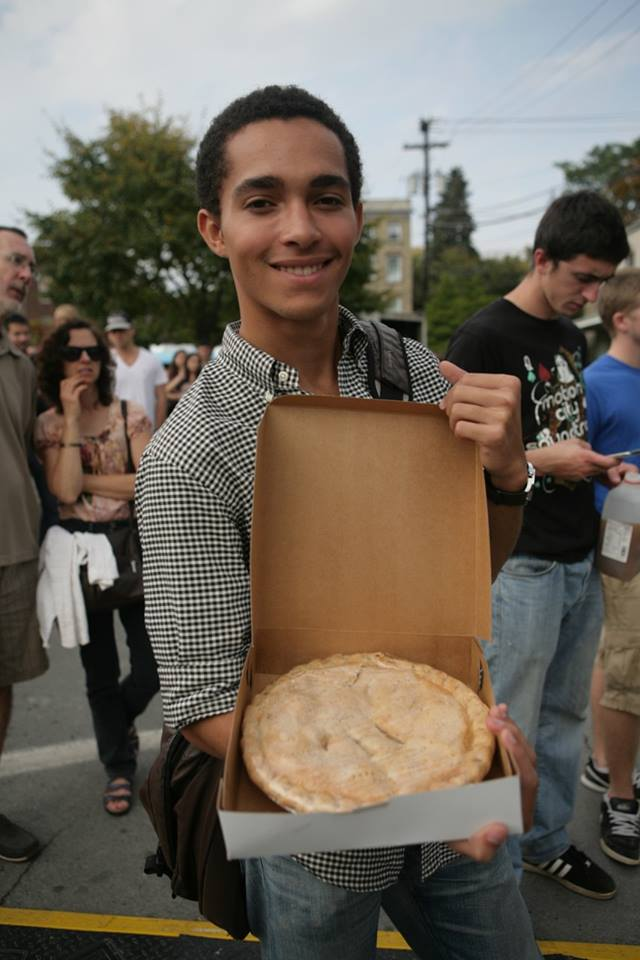

This page provides information on the date, time, and location of the various performances and events that occur at the Apple Harvest Festival. There is also information on other events occuring in Ithaca during the same weekend.
Apple Harvest Festival Schedule
Aurora Street Fairway Stage (Saturday)
11-12PM Moreland the Magician
12-12:45PM ICircus
1-3PM Jomo and Johnnycake
3-4PM Sundown Sally
4-6PM Regina O'Brien
Aurora Street Fairway Stage (Sunday)
12-12:45PM ICircus
1-3PM East Hill Classic Jazz Duo
3-4PM Luke Gustafson
4-6PM The Notorious Stringbusters
State Street Stage (Saturday)
10-10:45AM IC Voicestream
11-11:45AM Evan D. Williams
12-12:45PM Vitamin L
12:45-1:15PM Danza Romani
1:15-1:45PM June / Chandani Belly Dance
2-4PM Ageless Jazz Band
4-6PM Samuel B. Lupowitz & The Ego Band
State Street Stage (Sunday)
10-11AM Story Dance
11-12PM Mirage Belly Dance
12-1PM Apple Pie Bake Off Competition
1-2:45PM Allen Rose & The Restless Elements
3-4PM Anna Coogan Johnny Dowd
4-6PM Steve Southworth and the Rockabilly Rays
Other Events in Ithaca
First Friday Gallery Night
First People's Festival
Mark Nizer - The 4D Experience